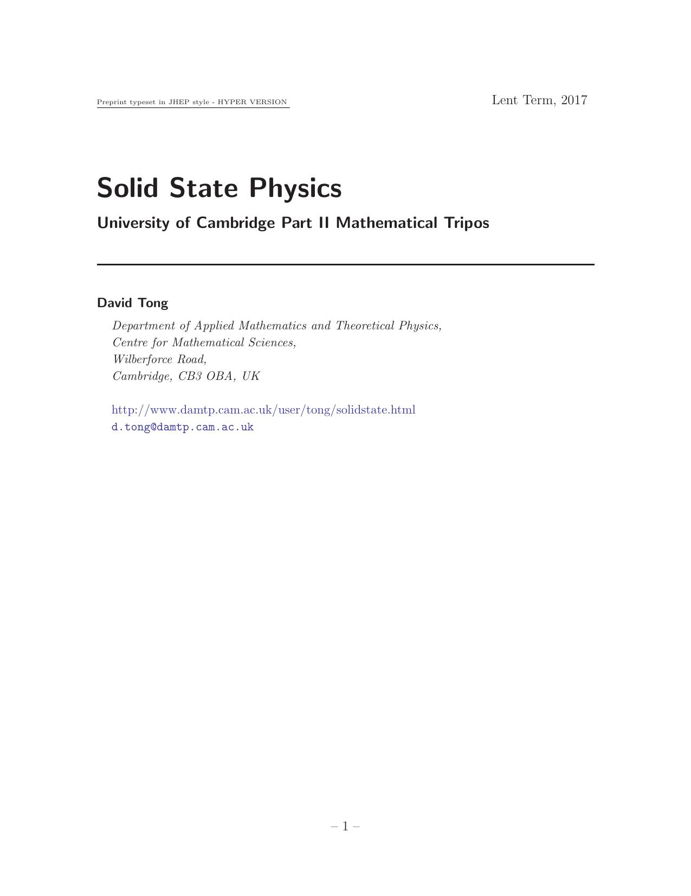

Solid State Physics
David Tong

0. Introduction
1. Particles in a Magnetic Field
1.1 Gauge Fields
1.1.1 The Hamiltonian
1.1.2 Gauge Transformations
1.2 Landau Levels
1.2.1 Degeneracy
1.2.2 Symmetric Gauge
1.2.3 An Invitation to the Quantum Hall Effect
1.3 The Aharonov-Bohm Effect
1.3.1 Particles Moving around a Flux Tube
1.3.2 Aharonov-Bohm Scattering
1.4 Magnetic Monopoles
1.4.1 Dirac Quantisation
1.4.2 A Patchwork of Gauge Fields
1.4.3 Monopoles and Angular Momentum
1.5 Spin in a Magnetic Field
1.5.1 Spin Precession
1.5.2 A First Look at the Zeeman Effect
2. Band Structure
2.1 Electrons Moving in One Dimension
2.1.1 The Tight-Binding Model
2.1.2 Nearly Free Electrons
2.1.3 The Floquet Matrix
2.1.4 Bloch's Theorem in One Dimension
2.2 Lattices
2.2.1 Bravais Lattices
2.2.2 The Reciprocal Lattice
2.2.3 The Brillouin Zone
2.3 Band Structure
2.3.1 Bloch's Theorem
2.3.2 Nearly Free Electrons in Three Dimensions
2.3.3 Wannier Functions
2.3.4 Tight-Binding in Three Dimensions
2.3.5 Deriving the Tight-Binding Model
2.4 Scattering Off a Lattice
2.4.1 The Bragg Condition
2.4.2 The Structure Factor
2.4.3 The Debye-Waller Factor
3. Electron Dynamics in Solids
3.1 Fermi Surfaces
3.1.1 Metals vs Insulators
3.1.2 The Discovery of Band Structure
3.1.3 Graphene
3.2 Dynamics of Bloch Electrons
3.2.1 Velocity
3.2.2 The Effective Mass
3.2.3 Semi-Classical Equation of Motion
3.2.4 Holes
3.2.5 Drude Model Again
3.3 Bloch Electrons in a Magnetic Field
3.3.1 Semi-Classical Motion
3.3.2 Cyclotron Frequency
3.3.3 Onsager-Bohr-Sommerfeld Quantisation
3.3.4 Quantum Oscillations
4. Phonons
4.1 Lattices in One Dimension
4.1.1 A Monotonic Chain
4.1.2 A Diatomic Chain
4.1.3 Peierls Transition
4.1.4 Quantum Vibrations
4.1.5 The Mössbauer Effect
4.2 From Atoms to Fields
4.2.1 Phonons in Three Dimensions
4.2.2 From Fields to Phonons
Back to Home